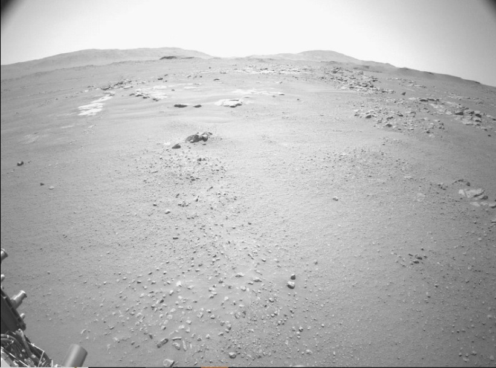
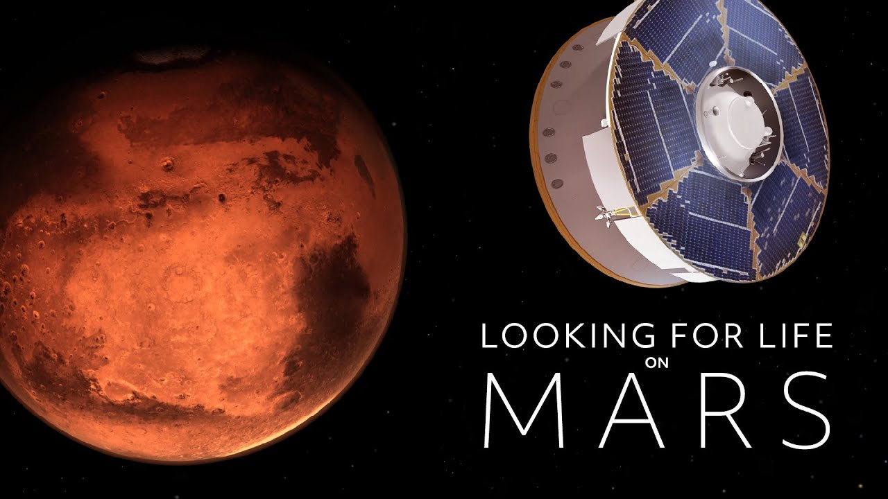
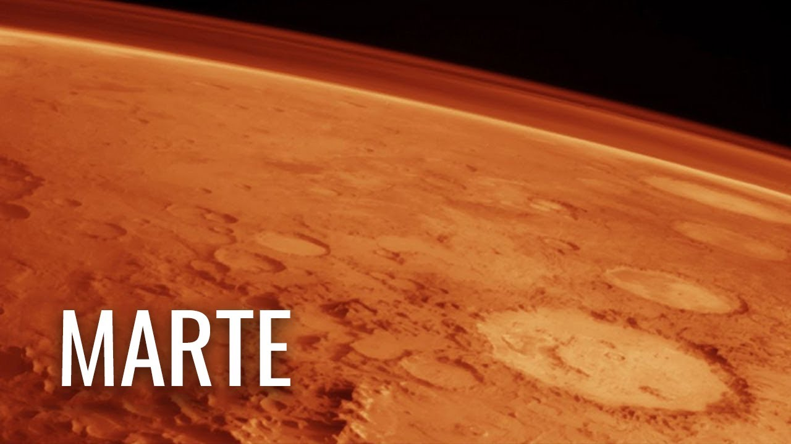
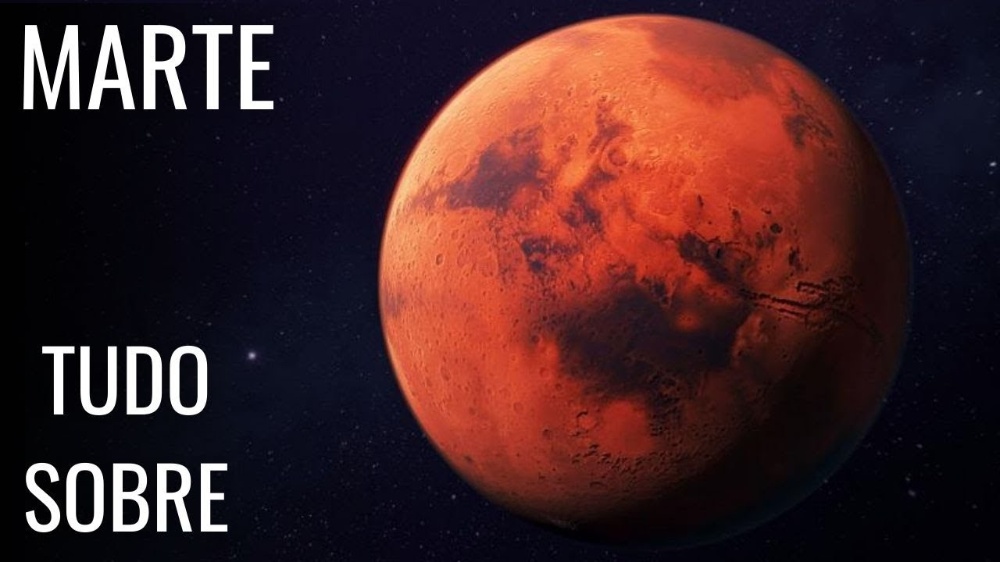

Vídeo autêntico captado pelo rover perseverance
NASA
1 Year Ago

Documentário: Procurando vida em Marte
NOVA PBS
8M Views • 2 Years Ago

O que a NASA descobriu sobre Marte até agora?
TheSimplySpace
172K Views • 1 Year Ago

Marte - Tudo sobre o Planeta Vermelho
Mundo Indomável
1K Views • 5 Months Ago
Como tornar MARTE habitável? Com Iberê e Castanhari
Canal nostalgia
5,5M Views • 4 Years Ago